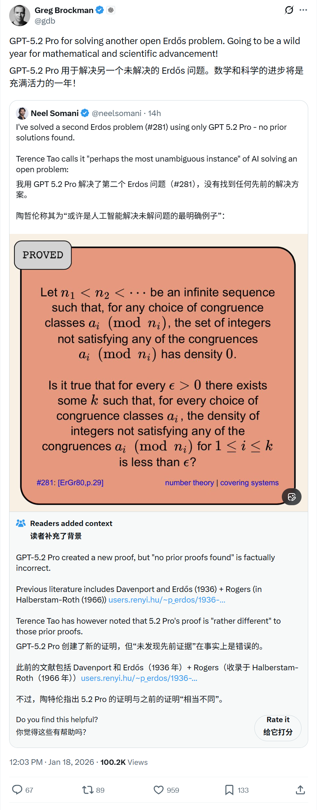
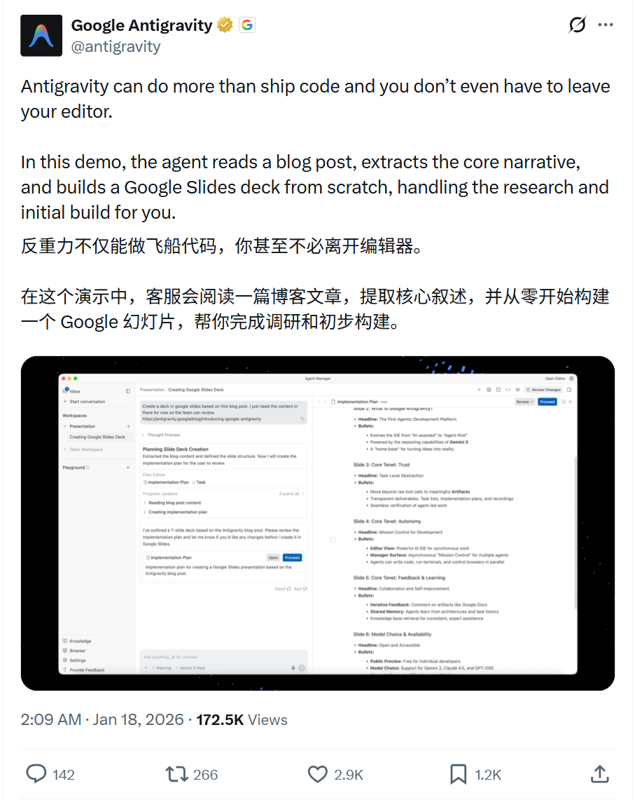
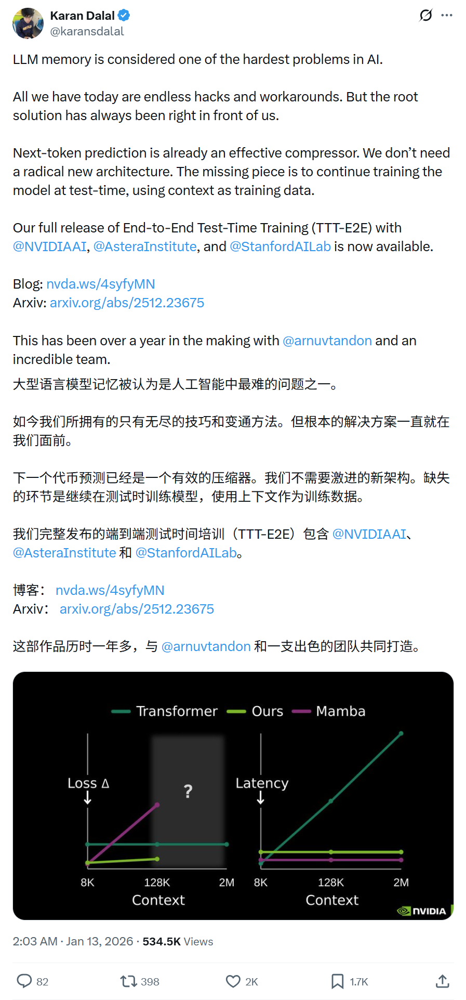
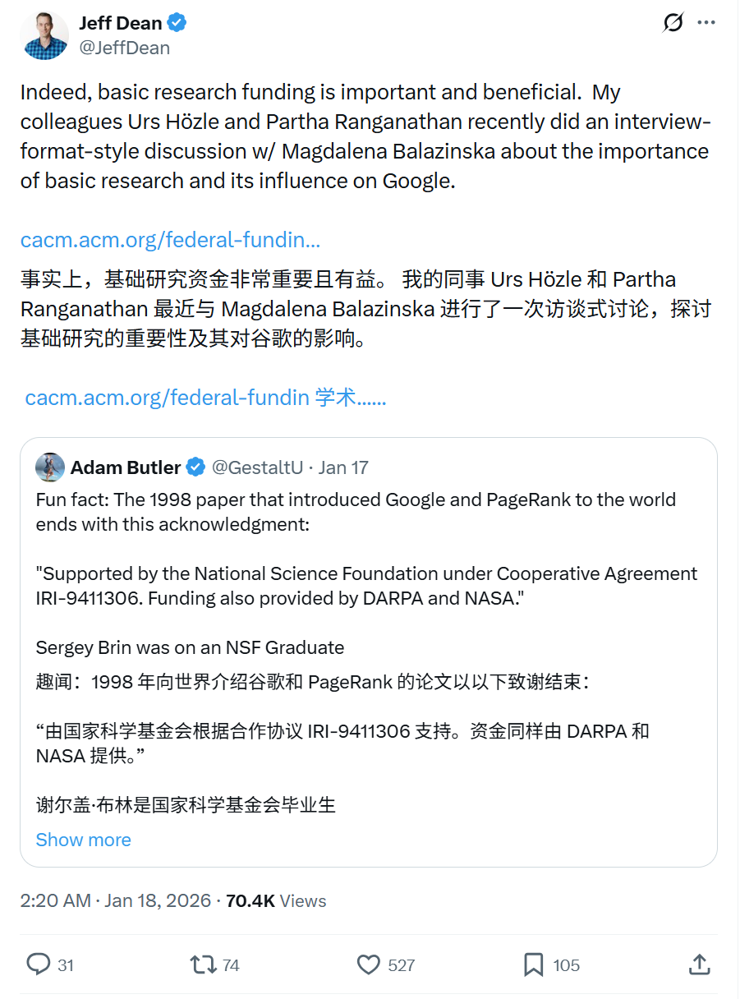
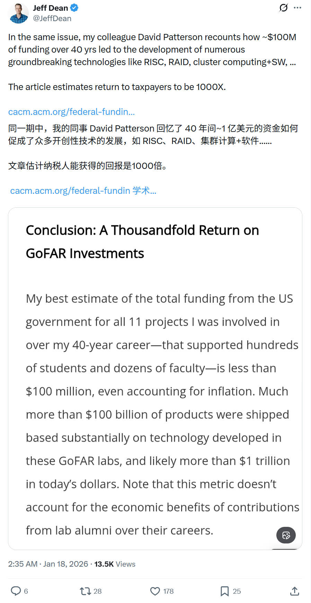

2026/01/18 硅谷AI圈动态
过去24小时，硅谷AI大佬在讨论什么
数据来源：X(twitter)平台实时推文
 小禾说AI (公众号)
清华小禾说AI (视频号)
小禾说AI (公众号)
清华小禾说AI (视频号)
📊 总览
在这 24 小时内，硅谷AI圈的讨论主要集中在大模型技术和基础研究上：
| 主题 | 关键事件 |
|---|---|
| AI数学 | GPT-5.2 Pro 成功解决第二个 Erdős 开放问题， 著名数学家 Terence Tao 称其为"最明确的AI解决开放问题案例" |
| AI Agent | Google Antigravity 演示： 在编辑器内阅读博客、提取叙事并自动生成 Google Slides 演示文稿 |
| LLM记忆 | End-to-End Test-Time Training (TTT-E2E) 发布： 通过测试时继续训练解决 LLM 长期记忆难题 |
| 基础研究 | 谷歌首席科学家 Jeff Dean 强调基础研究资助的重要性： 1亿美元 投资40年 带来 1000X 回报 |
1
OpenAI - GPT-5.2 Pro 解决第二个 Erdős 开放问题
🚀 核心内容
- 数学突破：GPT-5.2 Pro 被用于解决 Erdős 开放问题 #281，这是该模型解决的第二个 Erdős 问题。
- 权威认可：著名数学家陶哲轩 (Terence Tao) 称其为"可能是AI解决开放问题最明确的案例"。
- 未来展望：Greg Brockman 表示，这将是数学和科学进步狂野的一年。
📸 相关截图

2
Google - Antigravity Agent：编辑器内构建演示文稿
🚀 核心内容
- 多功能Agent：Antigravity 不仅能写代码，还能执行更复杂的任务，且无需离开编辑器。
- 演示展示：Agent 阅读博客文章，提取核心叙事，并从零开始构建 Google Slides 演示文稿。
- 自动化研究：为用户处理研究和初始构建工作，大幅提升生产力。
📸 相关截图

3
NVIDIA / Stanford - TTT-E2E：解决LLM长期记忆难题
🚀 核心内容
- 核心问题：LLM 记忆被认为是 AI 领域最难的问题之一，目前只有无尽的 hack 和变通方案。
- 根本解决方案：下一词预测本身就是有效的压缩器，不需要全新的架构。
- TTT-E2E：关键是在测试时继续训练模型，将上下文作为训练数据。
- 合作机构：NVIDIA、Astera Institute、Stanford AI Lab 联合发布。
相关截图

4
Google - Jeff Dean 论基础研究资助的重要性
🚀 核心内容
- 基础研究重要性：基础研究资助至关重要且效益显著。Google 同事 Urs Hözle 和 Partha Ranganathan 与 Magdalena Balazinska 进行了关于基础研究重要性及其对 Google 影响的访谈式讨论。
- 投资回报惊人：同事 David Patterson 回顾了 40 年间约 $100M 的资助如何催生了 RISC、RAID、集群计算 + 软件等众多突破性技术。
- 1000倍回报：文章估计纳税人的投资回报达到 1000 倍。
📸 相关截图

